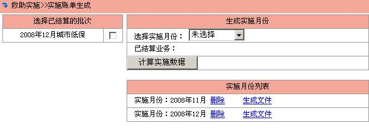
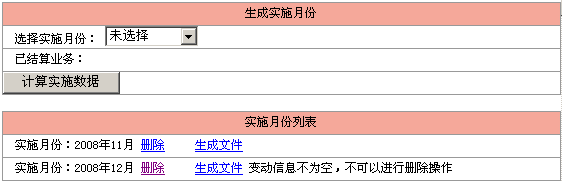

实施账单生成
当审批结算完成后，在已结算的批次中会出现之前做的政策名称，如下所示

说明:
ü 已结算的批次：指审批的是那一个月的数据。
ü 实施月份：指在哪一个月实施发放，一般地，实施月份为结算月份或为结算月份以后的月份。
选中实施的月份，选择这个月要实施的业务政策，点击“计算实施数据”生成实施数据。
生成数据后，在实施月份列表中出现实施月份，这时就可以生成传给金融机构的数据文件或删除实施月份的数据（之后可以重新生成）。
如果实施相关数据发生变化时，实施月份的数据就不能删除了，这时如果你点击删除，系统将提示：“变动信息不为空，不可以进行删除操作”，如下所示
